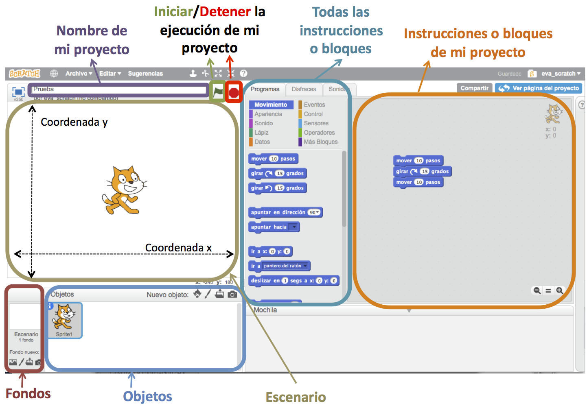

Posted on 25 Diciembre , 2017 at 8:00 PM
La educación tradicional está dando paso a una nueva educación, una educación en la que la tecnología se convierte en el centro neurálgico de toda actividad. Los niños se aburren con los métodos tradicionales de aprender las tablas o memorizar las conjugaciones de los verbos. Por esta razón, profesores visionarios han decidido darle un toque diferente a sus clases introduciendo la tecnología, como pizarras táctiles, tablets, juegos interactivos, etc. Desde hace unos años algunos profesores también empezaron a introducir Scratch en las aulas.
¿Qué es Scratch?
Scratch es un lenguaje de programación visual que fue desarrollado por Grupo Lifelong Kindergarten del Laboratorio de Medios del MIT. Estudiantes, académicos, profesores y padres lo utilizan para crear juegos, interacciones, animaciones,… fácilmente. Scratch es de código abierto, es decir, todo el mundo puede reutilizar proyectos existentes y modificarlos según sus necesidades o gustos. Estos proyectos incluyen desde juegos de videos, pasando por tarjetas de cumpleaños y simulaciones de ciencias, hasta concursos de animaciones de bailes.
¿Para quién está destinado?
Este proyecto lanzado por el MIT está destinado a un grueso de audiencia que se ubica entre los 8 y los 16 años, enfatizando su uso en los 12 años. Sin embargo, también puede ser utilizado por adultos que se quieran adentrar en la programación.
¿¿Cómo funciona Scratch??
Es muy sencillo, funciona como si fueran piezas de Lego. Se trata de una “caja” llena de “bloques gráficos de programación” (fichas/bloques/ladrillos de Lego) que se van ensamblando unos sobre otros al azar creando estructuras que controlan los distintos proyectos. De este modo, los niños pueden ir agrupando bloques gráficos, sin tener que recurrir a la sintaxis o la puntuación de los convencionales lenguajes de programación. Para empezar te tienes que dar de alta en la página web de Scratch, una vez hecho esto te encuentras con la siguiente pantalla:
A partir de esta pantalla empezamos a tomar conctacto con la página, antes de empezar con el proyecto te muestra un tutorial para enseñarte a manerjala y te muestra algunos proyectos para que sirvan de inspiración.
Bibliografía: